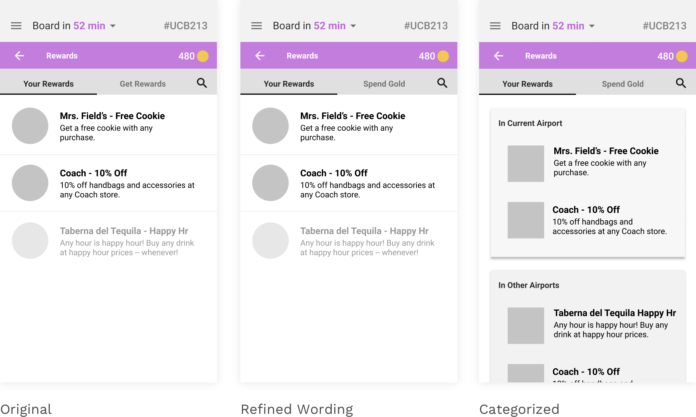

In Spring 2017, I took a User Interfaces class with UC Berkeley's School of Information. Over a semester, I collaborated with a team to take on a challenge from the startup Fly Fleet. Rob Youmans, head of UX Research Sciences at YouTube, was our instructor and mentor.
We created Wing It, an app that guides users through the airport by providing crowdsourced information. Travelers can complete various quests in the airport to earn points and redeem rewards.
High-fidelity work by Kate Lee. Interactions added by me after the project.
Role
Goals
Gamifying the air travel experience
Fly Fleet is an air travel app that helps guide people through the airport by providing crowdsourced information. They were interested in seeing how gamification can make pain points of traveling more enjoyable.
Account for user needs and business goals
Fly Fleet was pretty hands-off with this project, so we were allowed to think big! At the same time, we wanted to make sure our solutions took into account both user and business goals. We challenged ourselves to:

User Research
We interviewed 25 people on their air travel experiences
Personas
Based on this initial research, we generated personas to better understand our target audience.
Grace is a grad student who flies 3-6 times a year for conferences or vacation. She usually arrives as late as possible because she's short on time. She travels on a budget, so usually flies light, with only a carry-on.
Grace
Molly and Christian are a mom and child. They fly 1-2 times a year to visit family. Molly is stressed out navigating the airport as she has to juggle many things, including looking after Christian. She therefore arrives very early to the airport.
Molly & Christian
A 17 year old athlete who flies often with his team to many different airports. He's on the road a lot, with a strict traveling schedule due to traveling in a group. This means he's often bored waiting at the airport.
Alex

Some wireframes for the first prototype that I made.
Defining Wing It
In a one-week sprint, we diverged and converged to come up with a first iteration of our app. This first iteration focused on planning, guiding users through preparing for air travel all the way through to the airport gate. However, early feedback was not positive and the app felt "heavy-handed."
We learned an important lesson from this first iteration: let users come to the app. Instead of telling people what to do and forcing attention, we should be providing information relevant to their context. With this in mind, we re-iterated and came up with a new concept for Wing It based on user needs.
Our homepage is a map that immediately shows people where they need to go and the time it takes. Quests also fit in the flow of people's needs at an airport. For example, a person looking for food can complete a quest to leave a rating at a restaurant.
By completing Quests, people help fellow travelers by providing them valuable data. They also can earn gold to put towards rewards. On the business side, rewards are a promotional opportunity.
We also envisioned Quests that could be completed when someone's just sitting and waiting, like watching ads or promotional episodes
Screens for the new Wing It.
Iterations
Now with a clearer idea of our app in mind, we dove into iterating and user testing. In this process, we used methods such as RITE testing, think-aloud user testing, and retrospective recall. We also referred back to heuristics. Below are some of the decisions we made.
Quests Landing
For the Quests Landing page, we needed to display quests and quest categories in a way that would be easily scannable. We wanted to make sure users could easily compare relevant information between quests when choosing a quest.

Variation 1
Our initial categorizations were pretty rudimentary. We knew that location would be particularly important for travelers weighed down by luggage, so a majority of the screen is taken up by a map
Variation 2
We tried a different method of displaying the categories, where users can see a preview quest of each category. Our hope was that would give users a general idea of the possibilities out there. We also began fleshing out nuanced quest categories
Variation 3
After AB testing, we found that users were generally open to clicking on different tabs to check out different categories. To preserve the highlighting feature that Variation 2 allowed for, we included "Featured" as a category. The top bar layout also made navigation into quest category names organic. We continued testing quest category names, and considered including images to feature quests
Current Variation
Taking a page from Google Maps, the Quests panel as a whole can be dragged up or down, such that the user has control over how central the map is on the screen. This is particularly relevant for categories such as "Simple," that don't require a user to leave their seat. To improve scanning on an already packed page, we decided against the images and instead opted for a cleaner UI where the rewards and time estimate would stand out (important decision factors for users)
Quests Flow

Scrolling Page
All the steps of a quest are displayed on one scrolling page. While this laid out the future steps very clearly, it was also overwhelming for users and made the expected user interaction unclear.
Multiple Steps
Splitting up the various steps of a quest into separate pages made interactions more clear. We were also able to include the map only where it made sense for the user to refer to it, reducing cognitive load.
Rewards Section
UX Language
We played around with wording quite a bit in the Rewards section, as users in testing were rather confused regarding the different categories. Accounting for the limitations in our testing, we found that "Spend Gold" helped establish a stronger correlation between the gold that people earned in quests, and buying rewards through gold.
Clarifying Categories
We also found that users interpreted the greyed out reward — initially meant to show a reward that wasn't applicable in a current airport — in vastly different ways. We therefore went for a more clear defined layout categorization.
Contextual Solutions
In our usability tests, we also discovered that users at the airport had a whole different set of needs than users normally might regarding a restaurant. Time and location are much more important factors.
Due to this, people are not likely to become loyal customers of an airport eatery, so we decided to go for a rating system over a review system. The rating system provides a quick and dirty way of evaluating a restaurant, and also makes it simple for users to considering a restaurant.

Global Search
Through talking to users, we realized that we were missing a key feature — a global search. By having a global search, we could also organically suggest people quests related to what they were searching, rather than requiring them to specifically look up quests. This made for a much more streamlined user journey.

Reflection